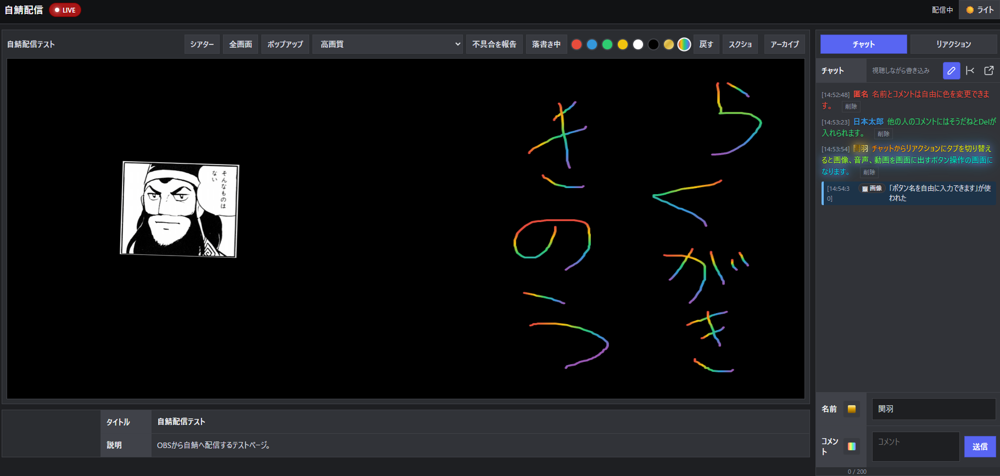
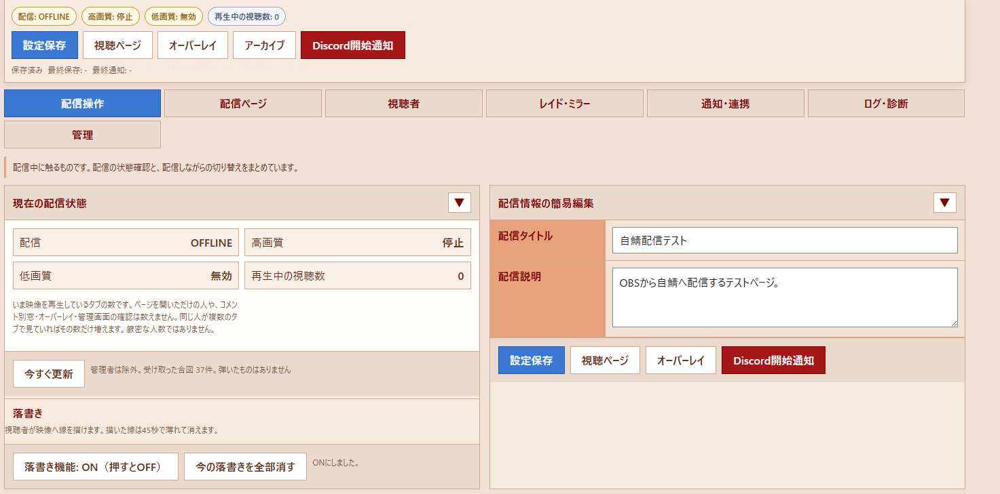
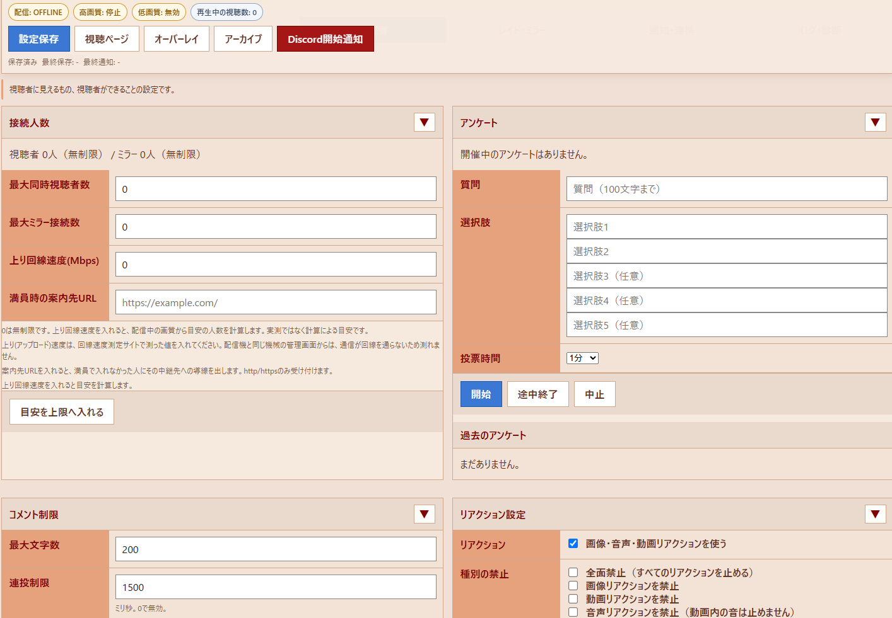
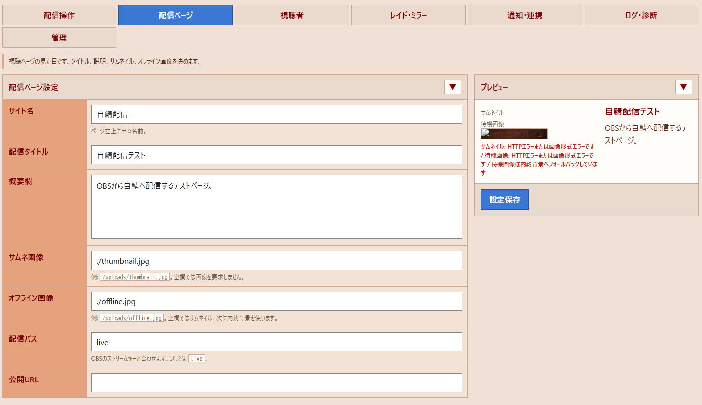
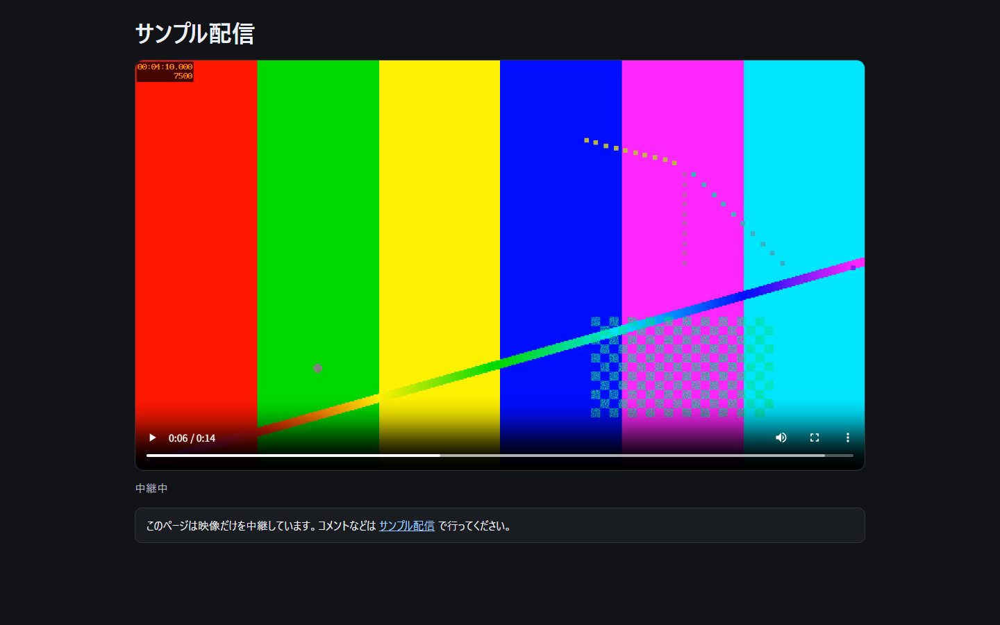
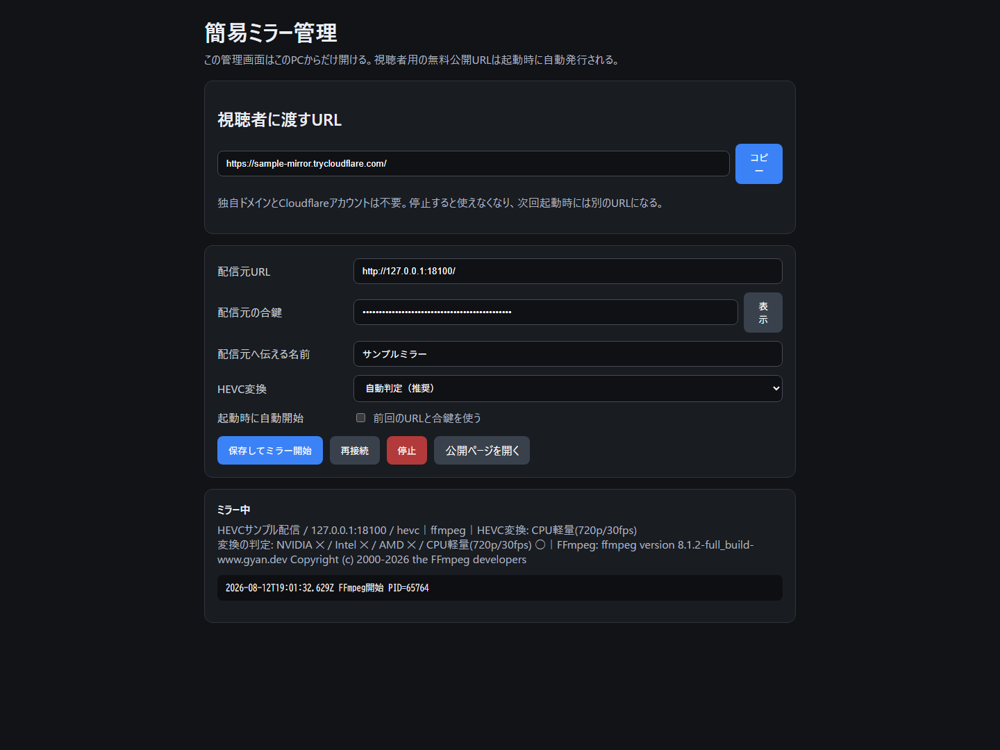

Windows向け
Windows PCを使って、自宅や自分のネットワーク上に配信環境を用意できます。
Stream on your own terms
OBS、MediaMTX、Node.jsを使ったWindows向け自鯖配信キット。 映像、コメント、リアクション、アーカイブを、自分で管理できる環境から配信できます。
Why self-stream-kit
Windows PCを使って、自宅や自分のネットワーク上に配信環境を用意できます。
使い慣れたOBS Studioから映像を送り、配信と録画を行えます。
軽量なMediaMTXを映像サーバーとして利用し、ブラウザへ配信します。
コメント、そうだね、画像・動画・音声リアクション、落書きを利用できます。
配信ごとにコメントを分け、対応する録画とコメントを一緒に確認できます。
設定や素材を保持したまま更新し、問題があれば更新前の状態へ戻せます。
Screenshots
視聴者が使う配信ページと、配信者が使う管理画面です。 配信中の操作からコメント・リアクション・アンケートなどの設定まで、ブラウザ上でまとめて扱えます。 画像をクリックすると原寸で確認できます。

チャット、画像・音声・動画リアクション、落書き、画質切替、スクリーンショット、 アーカイブなど、配信を見るための機能をひとつの画面にまとめています。

配信状態や再生中の視聴数を確認しながら、タイトル・説明の簡易編集や、 落書き機能の切り替えなどを行えます。

接続人数の上限、コメント制限、アンケート、リアクションなど、 視聴者が利用できる機能をまとめて設定できます。

サイト名、配信タイトル、説明、サムネイル、オフライン画像、公開URLなど、 視聴ページの見た目と基本情報を管理できます。
Latest update
すべての版をご利用の方へ： 視聴者からの不具合報告をもとに、映像の遅れが戻らなくなる問題と、見えているのに「再生できませんでした」と出る問題を修正しました。2026年8月27日版への更新を推奨します。
「全画面」ボタンで映像が画面いっぱいになり、右端にカーソルを寄せるとチャット欄が出てきます。そのままコメントもリアクションも送れます。
画像・音声・動画のタブが、一覧をスクロールしても上に貼り付いたままになります。
一番軽い画質で回線が苦しいとき、普通に見えているのに最終エラーが出ていました。
狙い6秒に対して80秒以上遅れたまま戻らない状態を、キットが検知できていませんでした。
HEVCで配信する方に関わる大事な設定が「詳細設定」に埋もれていて、気づけませんでした。
どの画質を誰が見ているかが、すべて「unknown」に集計されていました。
確認は隔離したローカル環境に加え、実OBS・実MediaMTXを使った配信者の実環境でも実施しています。
2026年7月30日版〜8月22日版のいずれからも、同じ手順で更新できます。設定・パスワード・素材・録画・コメント履歴・OBSプロファイルの変更内容は引き継がれます。更新後はOBSのブラウザソースで「現在のページのキャッシュを更新」をしておくと確実です。
Previous update
すべての版をご利用の方へ： リアクションの整理（カテゴリ・名前の変更）と音量（50〜200%）・試聴の追加に加え、動画が20MBまで登録できない不具合を修正しました。2026年8月22日版への更新を推奨します。
音声・動画リアクションの音量を素材ごとに50〜200%で設定できます。視聴者は送る前に手元で試聴し、その回だけ音量を選べます。
登録数が増えても目的のボタンを探せるよう、一覧をカテゴリごとに折り畳めるようにしました。
ボタン名が空欄だとファイル名が登録され、後から直せなかった問題を解消しました。
「登録済みリアクション素材」に並び替え・束ね・プレビューを追加しました。
リリース前の全ファイル監査で見つけた問題も合わせて直しました。
機能説明書に今回の機能と注意点を追記しました。
確認は隔離したローカル環境に加え、実OBS・実MediaMTXを使った配信者の実環境でも実施しています。
2026年7月30日版〜8月14日版のいずれからも、同じ手順で更新できます。設定・パスワード・素材・録画・コメント履歴・OBSプロファイルの変更内容は引き継がれます。更新後はOBSのブラウザソースで「現在のページのキャッシュを更新」をしておくと確実です。
2026年8月14日以前の更新内容はリリース一覧でご確認いただけます。
Mirror tool
簡易自鯖ミラーツールは、自鯖配信キットの映像を協力者のPCから再配信して、配信元の回線負荷を分散する補助ツールです。 配信者から「配信元URL」と「ミラー用合鍵」を受け取った協力者が、自分のPCでミラーを立てられます。
旧版をお使いの方へ： 2026年8月15日版を公開しました。GPUがあるのにCPU変換になってしまう初版からの不具合を修正し、GPU搭載PCはフル画質・低負荷で中継できるようになりました。HEVC中継の安定化と軽量化、起動の進捗表示、状態診断ツールも含みます。新しいZIPを展開し直し、0_初回準備.batから実行してください。
独自ドメイン、Cloudflareアカウント、ルーターのポート開放は不要です。
中継するのは映像だけです。コメントやリアクションは配信元ページで行います。

映像と配信元へのリンクだけの最小構成です。画面はテスト映像を中継したサンプルです。

配信元URLと合鍵を入れて「保存してミラー開始」を押すだけ。視聴者に渡すURLのコピーや、 どの変換方式（NVIDIA / Intel / AMD / CPU軽量）が使えたかの判定確認もここからできます。
Feedback
気軽なひとことは匿名で、詳しい不具合報告はGitHubで。送りやすい窓口を選べます。
感想、ちょっとした疑問、「こんな機能がほしい」といった気軽な声はこちらへ。
匿名で送る再現手順がある不具合、ログを使った調査、具体的な改善提案はこちらへ。
Webhook URL、管理パスワード、Cookie、秘密設定、生IP、Cloudflareの認証情報は掲載しないでください。
Issueを作成する